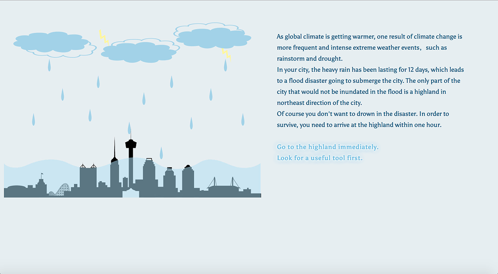

Rainstorm
An Interactive Storytelling about Escape Game

ROLEGraphic Designer & Programmer, Independent Work
DATE08/2016 – 09/2016
TOOLTwine Macros, JavaScript, HTML/CSS
Design Goal
- Story-driven Emotional Choices
- Scripting of the User by Narrative
- Awareness of Environment Protection.
Design Statement
“Rainstorm” is an interactive narrative project set in the background of a flood disaster caused by climate change and extreme weather. In order to survive in the disaster, participants are expected to arrive at a destination within 60 mins, otherwise they will drown in the flood. This project explores the possibilities, challenges and benefits of using Twine IDE as a medium to delivery messages and interact with participants. The project creates dramatic experience for the interactor by leveraging expectations of the disaster genre within a time-limited scenario that elicits emotional urgent choices through clicking actions and provides an individual-customized script of the narrative.
Installation Instruction
- Please open the project in a desktop browser. The application is not mobile-friendly.
- If you use Chrome running the project, please clean up cookies after you play the project.